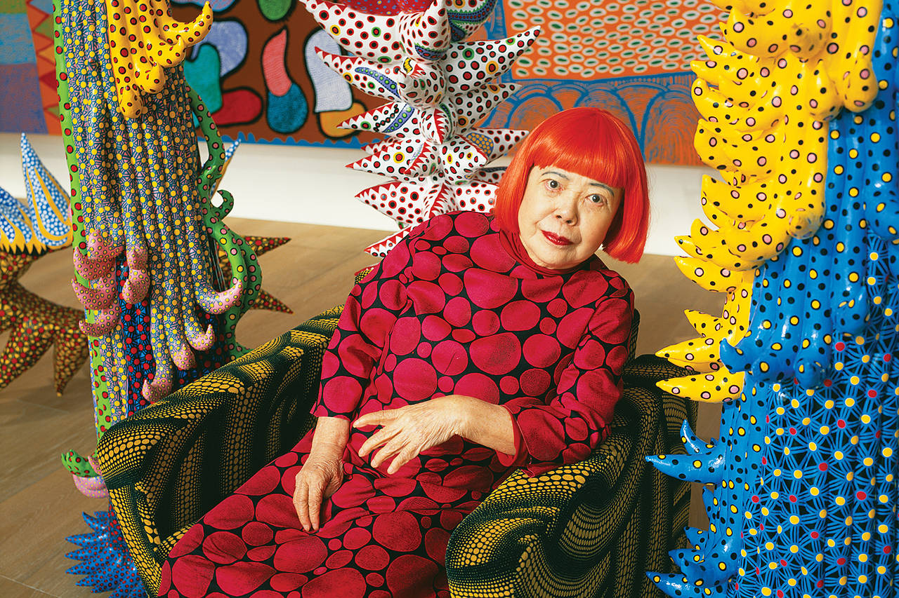
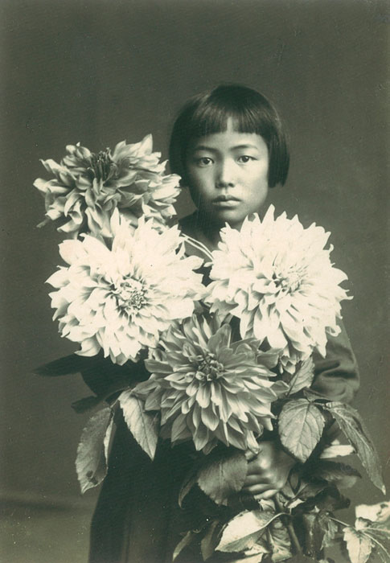

Yayoi Kusama
Yayoi Kusama’s (b. 1929) work has transcended two of the most important art movements of the second half of the twentieth century: pop art and minimalism. Her highly influential career encompasses paintings, performances, room-size presentations, outdoor sculptural installations, literary works, films, fashion, design, and interventions within existing architectural structures, which allude at once to microscopic and macroscopic universes.
Born in Matsumoto, Japan, Kusama has been the subject of both solo and group presentations worldwide. She presented her first solo show in her native Japan in 1952. In the mid-1960s, she established herself in New York as an important avant-garde artist by staging groundbreaking and influential happenings, events, and exhibitions. Her work gained renewed widespread recognition in the late 1980s following a number of international solo exhibitions, including shows at the Center for International Contemporary Arts, New York, and the Museum of Modern Art, Oxford, both of which took place in 1989. She represented Japan in 1993 at the 45th Venice Biennale, to much critical acclaim. In 1998, the Los Angeles County Museum of Art and the Museum of Modern Art, New York, co-organized Love Forever: Yayoi Kusama, 1958–1968, which toured to the Walker Art Center, Minneapolis (1998-1999), and Museum of Contemporary Art, Tokyo (1999).
In 2011 to 2012, her work was the subject of a large-scale retrospective that traveled to the Museo Nacional Centro de Arte Reina Sofía, Madrid; Centre Pompidou, Paris; Tate Modern, London; and the Whitney Museum of American Art, New York. From 2012 through 2015, three major museum solo presentations of the artist’s work simultaneously traveled to major museums throughout Japan, Asia, and Central and South America. In 2015, the Louisiana Museum of Modern Art in Humlebæk, Denmark, organized a comprehensive overview of Kusama’s practice that traveled to Henie-Onstad Kunstsenter, Høvikodden, Norway; Moderna Museet, Stockholm; and Helsinki Art Museum. In 2017-2019, a major survey of the artist’s work, Infinity Mirrors, was presented at the Hirshhorn Museum and Sculpture Garden, Washington, DC; Seattle Art Museum; The Broad, Los Angeles; Art Gallery of Ontario, Toronto; The Cleveland Museum of Art, Ohio; and the High Museum of Art, Atlanta. Yayoi Kusama: Life Is the Heart of the Rainbow, which marked the first large-scale exhibition of Kusama’s work presented in Southeast Asia, opened at the National Gallery of Singapore in 2017 and traveled to the Queensland Art Gallery | Gallery of Modern Art in Brisbane, Australia and the Museum of Modern and Contemporary Art in Nusantara, Jakarta. In 2019, All About Love Speaks Forever, an exhibition tailor-made specifically for the Fosun Foundation, Shanghai, included more than forty works by the artist.
A comprehensive retrospective of the artist’s work was on view at Gropius Bau, Berlin, in 2021, and traveled to the Tel Aviv Museum of Art in 2022. KUSAMA: Cosmic Nature was on view at The New York Botanical Garden in 2021. In 2022, several major exhibitions of the artist’s work opened, including Yayoi Kusama: DANCING LIGHTS THAT FLEW UP TO THE UNIVERSE, PHI Foundation for Contemporary Art; Yayoi Kusama: My Soul Blooms Forever, Qatar Museums, Doha; and One with Eternity: Yayoi Kusama in the Hirshhorn Collection, Hirshhorn Museum and Sculpture Garden, Washington, DC. A major retrospective of the artist’s oeuvre, Yayoi Kusama: 1945 to Now, was on view from 2022 to 2023 at the M+ Museum in Hong Kong, then traveled to Guggenheim Bilbao (2023) and Serralves Museum, Portugal (2024). Also in 2023, Yayoi Kusama - You, Me and the Balloons, was on view at Aviva Studios, Manchester, and the Pérez Art Museum Miami presented the exhibition Yayoi Kusama: LOVE IS CALLING. The solo exhibition Yayoi Kusama: Infinite Love was on view at the San Francisco Museum of Modern Art in 2024, and a comprehensive retrospective exhibition of the artist’s work was on view at the National Gallery of Victoria, Melbourne, through the spring of 2025.
In 2025, the first installment of a major traveling European exhibition of Kusama’s work opened at the Fondation Beyeler, Riehen / Basel, marking the first retrospective devoted to the artist in Switzerland. The exhibition is currently on view at Museum Ludwig, Cologne, and will travel to the Stedelijk Museum, Amsterdam, in Fall 2026.
Yayoi Kusama Museum, a museum dedicated to the artist’s work, opened October 1, 2017, in Tokyo with the inaugural exhibition Creation is a Solitary Pursuit, Love is What Brings You Closer to Art. The museum’s fourteenth exhibition devoted to her work, I WOULD OVERCOME DEATH AND GO ON LIVING, will be on view in October 2024. Work by the artist is held in museum collections worldwide, including the Art Gallery of Ontario, Toronto; Centre Pompidou, Paris; Hirshhorn Museum and Sculpture Garden, Washington, DC; Los Angeles County Museum of Art; The Museum of Modern Art, New York; National Museum of Modern Art, Tokyo; Stedelijk Museum, Amsterdam; Tate, United Kingdom; Walker Art Center, Minneapolis, Minnesota; and the Whitney Museum of American Art, New York, among numerous others. Kusama lives and works in Tokyo.